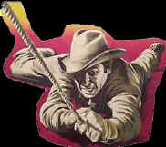
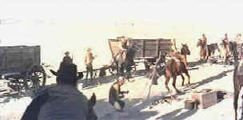

|
Man
from Laramie/A-,B- |
|
Columbia/1955/104m/ANA
2.35/PS 1.33 |
 Memory
can play the meanest tricks on you. Twenty or thirty years after
you've seen a great movie, you meet it again, and it's not that
good. With the release of The Man from Laramie on
DVD, I could hardly contain my excitement nor temper my trepidation.
My images of this film actually date back to it's initial
theatrical release. It blew me away then. One scene vividly
stayed with me always. I am happy to report that time has been
kind and The Man from Laramie is still a tough, terrific
western, not to be missed!
A typical Western story of revenge, The
Man from Laramie steps up in class through an intelligent
script and outstanding character portrayal. Will Lockhart is the
man that crosses hostile Indian country with three wagons of
supplies to arrive in Coronado, New Mexico. Lockhart's arrival
stirs things up when he is confronted by belligerent Dave
Waggonman, the hot-headed son of dominating land baron Alec
Waggonman. Vic Hansbro, Waggonman's ranch boss, steps in
between Lockhart and Dave, trying to control the situation with
reason. Strong plot-woven psychological elements strengthen
character motivation adding to the tapestry of pain. Lockhart is
suffering from the loss of his younger brother. Vic
Hansbro broods over Alec Waggonman's blind paternal love for his
son. Boorish bully Dave Waggonman shrivels in the shadow of his
rock hard father. And Alec Waggonman is haunted by a foreboding
dream.
Anthony
Mann's direction is straight-forward with brilliant
story-telling emphasis. Like his favorite lead actor, there's no
fat associated with Mann's directing style. Pacing is near
perfect. The actors are a joy to watch. James Stewart gives Will
Lockhart a balance of humanity and hardness, hallmarks of his
western roles. Seventy-five
year old Donald Crisp makes a formidably stern Alec Waggonman.
The always terrific Arthur Kennedy is a gritty Vic Hansbro.
Veteran character actress Aline MacMahon plays a strong-minded
frontier woman with humor and assurance. Alec Nichol as Dave and
Cathy O'Donnell as Waggonman cousin Barbara fail to offer up the
subtlety and presence of the other actors.
Not everything in The Man from
Laramie fits perfectly. Bushwhacker Chris Boldt's
motivations are left in the dirt of a dark alley. Though Barbara
Waggonman's presence serves the film in a number of ways, her
character is rather weak, perhaps owing to an insipid performance
from Cathy O'Donnell.
|
 |
|
Stewart
gets the taut end of a rope. ©Columbia |
Some of the Charles Lang photography is sheer poetry. A short
montage of Stewart racing on his horse, silhouetted against the
sky, could have been a model for a Remington series of bronzes.
Mann, using "scope" for the first time, composes edge
to edge for maximum impact. Still, against the backdrop of
mountains and sky, close-ups fill the screen, looking deep into
the characters.
The James Stewart/Anthony Mann
collaboration resulted in a series of outstanding films, most
notably the five westerns beginning with Winchester '73
and finishing on another high note with The Man from Laramie.
Bend of the River, The Far Country and The
Naked Spur are the remaining points on this star of a
partnership.
The good news is that The Man from
Laramie is eminently watchable from a video standpoint. The
sweep of the big west is vibrantly recorded. Don't expect the
widescreen anamorphic transfer to look as fresh as a movie made
in 1999. There is some minor reduction of color saturation, but
it is not obvious. Dirt and scratches invade in a few instances,
but again, this is minor. There were a couple of instances of
image compromise due to what appear to be digital tape tape
dropouts. Consistently sharp detail avoids the pitfall of
excessive edge enhancement. Significant grain is frequently
apparent, but it is tightly controlled. You can choose
between Dolby matrixed two-channel stereo or the original three
channel mix, which occasionally places dialog in the left or
right speakers. Either way, the mix is clear and clean. |
The
Feature
Archive has articles
ranging from Akira
Kurosawa to Blonde
Bimbos, The
Heistmasters and Frank
Darabont.

Click on the image above for a "dream interview"
with director John
Ford.
Check out the Movie
Poster Archive for short bios and images of
Susan Hayward, Kirk Douglas, Katharine Hepburn and many more.
This month's featured star is Clark
Gable.

Imaging
Science Foundation
promotes proper standards in home theater viewing. ISF trained
technicians offer monitor calibration services to consumers. The
difference in a properly calibrated monitor can be
astounding. Click on the image to find an ISF member near you.
HOT
LINKS
National
Preservation Film Board
Learn about what this
organization is doing to preserve our film heritage. Want to
know the guidelines for proper handling of film? This is the
place.
Home
Theater Reference Reviewing System

When you read a DVD review it's of utmost importance to know
what equipment is being used to evaluate quality. Click on the
projector to find out more.
|